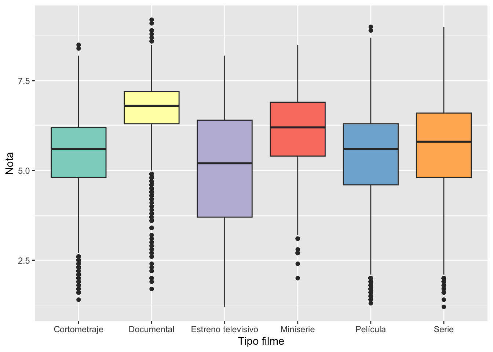

pacman::p_load(rio, dplyr, ggplot2)Clase práctica Semana 11
Material para el ejercicio
Descarga la carpeta .zip para acceder al material de esta sesión. Haga click en el siguiente enlace. No olvides unzipear el archivo.
Gráficar en R
Usaremos el paquete ggplot 2 para generar distintos tipos de gráficos: - Gráfico de barras - Histograma - Boxplot
Primero, preparamos todos los insumos que necesitaremos y ya conocemos (carga de paquetes, importación de data y tabulación de resultados)
Cargar paquetes
Importación de data
df <- import("data/filmaffinity_dataset_limpio.xlsx")Exploración de data
str(df)'data.frame': 119003 obs. of 9 variables:
$ index : num 0 1 2 3 4 5 6 7 8 9 ...
$ Título : chr "'49-'17" "10,000 Years B.C. (C)" "1812" "20.000 leguas de viaje submarino (C)" ...
$ Año : num 1917 1916 1912 1907 1909 ...
$ País : chr "Estados Unidos" "Estados Unidos" "Rusia" "Francia" ...
$ Dirección : chr "Ruth Ann Baldwin" "Willis H. O'Brien" "Vasili Goncharov, Kai Hansen, Aleksandr Uralsky" "Georges Méliès" ...
$ Reparto : chr "Joseph W. Girard, Leo Pierson, William Dyer, Mattie Witting, George C. Pearce, Jean Hersholt, Donna Drew" NA "Pavel Knorr, Vasili Goncharov, Aleksandra Goncharova, Andrej Gromov, V. Serjozhinikov, A. Veskov" "Georges Méliès" ...
$ Nota : num NA 5.1 NA 6 5.3 NA 5.4 NA 4.6 NA ...
$ Tipo filme: chr "Película" "Cortometraje" "Película" "Cortometraje" ...
$ Género : chr "Western" "Comedia" "Drama" "Fantástico" ...Gráfico de barras
¿Qué variable podemos representar con un gráfico de barras?
Antes de empezar a graficar, crearemos una tabla de frecuencias y porcentajes con count y mutate, como ya hemos aprendido. Esta tabla será usada con las funciones del paquete {ggplot2}. Este paquete trabaja con capas que van añadiendo configuraciones o elementos al gráfico. Probaremos primero una fórmula básica para generar gráficos de barras. Conectaremos cada capa con el símbolo +.
tab_bars <- df %>%
count(`Tipo filme`) %>%
mutate(pct = n / sum(n) * 100)
ggplot(tab_bars, aes(x = `Tipo filme`, y = pct)) +
geom_col()- 1
-
En la función
ggplotexiste el argumentodatadonde ingresaremos nuestro objetotab_bars.Los elementos que deseamos graficar irán en la funciónaes. - 2
-
Indicamos el tipo de gráfico con
geom_col().
Probemos añadir más capas tener una gráfico más presentable.
ggplot(tab_bars, aes(x = `Tipo filme`, y = pct)) +
geom_col(fill = "steelblue") +
labs(title = "Gráfico 1: Tipo de filme (%)",
x = "Tipo de filme",
y = "Porcentaje") +
theme_minimal()- 1
-
En la función
ggplotingresamos ladata(tab_bars) y los elementos que deseamos graficar enaes. - 2
-
Indicamos el tipo de gráfico con
geom_col(). Agregamos el argumentofillpara indicar el color que rellenará las barras. - 3
-
Con
labs(abreviatura de labels), indicamos etiquetas para el título y ejes x e y. - 4
-
theme_minimalnos da una visualización más limpia quitando el fondo gris.
La versatilidad de {ggplot2} nos permite personalizar distintas combinaciones.
ggplot(tab_bars, aes(x = `Tipo filme`, y = pct, fill = `Tipo filme`)) +
geom_col() +
labs(title = "Gráfico 1: Tipo de filme (%)",
x = "Tipo de filme",
y = "Porcentaje") +
coord_flip() +
theme_minimal() +
scale_fill_brewer(palette = "Set3")- 1
-
En la función
ggplotingresamos ladata(tab_bars) y los elementos que deseamos graficar enaes. Añadimos enaesel argumentofillpara colorear individualmente cada columna. - 2
-
Indicamos el tipo de gráfico con
geom_col(). - 3
-
Con
labs(abreviatura de labels), indicamos etiquetas para el título y ejes x e y. - 4
-
coord_flipgira los ejes para darnos barras horizontales. - 5
-
theme_minimalnos da una visualización más limpia quitando el fondo gris. - 6
-
En
scale_fill_brewerindicamos una paleta de colores para usar.
También podemos cruzar variables.
df2 <- df %>%
mutate(Nota_cat =
case_when(Nota < 5 ~ "Menos de 5",
Nota >= 5 ~ "5 a más",
is.na(Nota) ~ "Sin nota"),
Nota_cat =
factor(Nota_cat,
levels = c("Sin nota", "5 a más", "Menos de 5"),
ordered = TRUE))
tab_bars2 <- df2 %>%
group_by(`Tipo filme`) %>%
count(Nota_cat) %>%
mutate(pct = round(n / sum(n) * 100, 0))
ggplot(tab_bars2, aes(x = `Tipo filme`, y = pct, fill = Nota_cat)) +
geom_col() +
labs(title = "Gráfico 1: Tipo de filme (%)",
x = "Tipo de filme",
y = "Porcentaje") +
geom_text(aes(label = pct), position = position_stack(vjust = 0.5)) +
theme_minimal() +
scale_fill_brewer(palette = "Set3")- 1
-
Creamos una variable categórica a partir de
Notaconmutateycase_when. - 2
-
Volvemos nuestra variable
Nota_catun factor para ordenar las categorías. - 3
-
Creamos nuestra tabla y añadimos la función
group_bypara calcular las frecuencias deNota_catdentro de cada tipo de filme. - 4
-
En la función
ggplotingresamos ladata(tab_bars) y los elementos que deseamos graficar enaes. Añadimos enaesel argumentofillpara colorear individualmente cada categoría deNota_cat. - 5
-
Indicamos el tipo de gráfico con
geom_col(). - 6
-
Con
labs(abreviatura de labels), indicamos etiquetas para el título y ejes x e y. - 7
-
geom_textsirve para colocar las etiquetas de los valores. - 8
-
theme_minimalnos da una visualización más limpia quitando el fondo gris. - 9
-
En
scale_fill_brewerindicamos una paleta de colores para usar.
Histograma
¿Qué variable podemos representar con un histograma?
ggplot(df, aes(x = Año)) +
geom_histogram(fill = "steelblue") +
labs(title = "Gráfico 2: Año de estreño de filmes",
x = "Año",
y = "Frecuencia") +
theme_minimal()- 1
-
En la función
ggplotingresamos ladata(tab_bars) y los elementos que deseamos graficar enaes(solamentexen este caso). - 2
-
Indicamos el tipo de gráfico con
geom_histogram(). Agregamos el argumentofillpara indicar el color que rellenará las barras. - 3
-
Con
labs(abreviatura de labels), indicamos etiquetas para el título y ejes x e y. - 4
-
theme_minimalnos da una visualización más limpia quitando el fondo gris.
`stat_bin()` using `bins = 30`. Pick better value with `binwidth`.Una capa que nos permite cruzar la información para una visualización desagregada es facet_wrap.
ggplot(df, aes(x = Año)) +
geom_histogram(fill = "steelblue") +
facet_wrap(~ `Tipo filme`, scales = "free") +
labs(title = "Gráfico 2: Año de estreño de filmes",
x = "Año",
y = "Cantidad") +
theme_minimal()- 1
-
En la función
ggplotingresamos ladata(tab_bars) y los elementos que deseamos graficar enaes(solamentexen este caso). - 2
-
Indicamos el tipo de gráfico con
geom_histogram(). Agregamos el argumentofillpara indicar el color que rellenará las barras. - 3
-
Divide en facetas por grupo. Colocamos la variable de grupos después del símbolo
~. - 4
-
Con
labs(abreviatura de labels), indicamos etiquetas para el título y ejes x e y. - 5
-
theme_minimalnos da una visualización más limpia quitando el fondo gris.
`stat_bin()` using `bins = 30`. Pick better value with `binwidth`.Box Plot
¿Qué variable podemos representar con un box plot?
ggplot(df2, aes(y = Nota, x = `Tipo filme`, fill = `Tipo filme`)) +
geom_boxplot(show.legend = F)- 1
-
En la función
ggplotingresamos ladata(tab_bars) y los elementos que deseamos graficar enaes. - 2
-
Indicamos el tipo de gráfico con
geom_boxplot().

Exportación de gráficos
Finalmente, para exportar gráficos, se puede utilizar la siguiente función también en {ggplot2}:
plot <- ggplot(df, aes(y = Nota, x = `Tipo filme`)) +
geom_boxplot()
ggsave("outputs/boxplot.png", plot)- 1
-
Asignamos el objeto a crear como
plot. La funciónggplotingresamos ladata(tab_bars) y los elementos que deseamos graficar enaes. - 2
-
Indicamos el tipo de gráfico con
geom_boxplot().
Saving 7 x 5 in imageEjercicio final
Responde las siguientes preguntas a partir de un gráfico generado con ggplot2:
- ¿Qué tendencia sigue la producción de películas francesas según el año de lanzamiento?